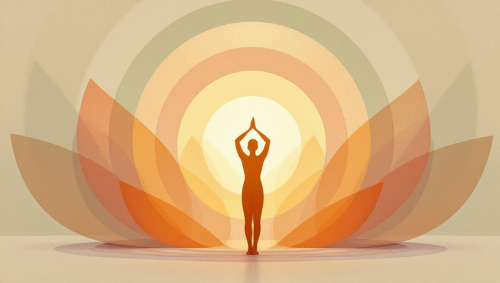

Come funzionano i numeri in numerologia
La numerologia riduce tutti i numeri a più cifre a un singolo digit sommando le singole cifre — eccetto i numeri maestri 11, 22 e 33, che vengono lasciati interi. Il risultato è uno dei nove numeri archetipici di questa guida.
Ad esempio: nato il 07/03/1988 → 0+7+0+3+1+9+8+8 = 36 → 3+6 = 9. Numero del Percorso di Vita: 9.
Importante: un numero numerologico descrive una tendenza energetica, non un destino fisso. Indica punti di forza probabili e sfide ricorrenti — non è una gabbia.
Il significato dei numeri dall'1 al 9
Qualità: indipendenza, leadership, iniziativa, coraggio, originalità. L'1 è il principio di ogni ciclo — porta una spinta ad avviare, a muoversi per primo, a tracciare un percorso dove non ce n'è ancora uno. In equilibrio, produce leader sicuri. Fuori equilibrio, può scivolare nell'isolamento o nell'arroganza.
Qualità: cooperazione, sensibilità, diplomazia, intuizione, pazienza. Il 2 eccelle nelle relazioni e nelle partnership — ascolta, bilancia e trova terreno comune. La sfida: imparare a dire no e a esprimere i propri bisogni senza sentirsi in colpa.
Qualità: creatività, comunicazione, gioia, socievolezza, espressione di sé. Il 3 porta entusiasmo e un dono naturale per le parole, l'arte e il contatto umano. La sfida: la stessa facilità espressiva che è il suo punto di forza può portare a energia dispersa e difficoltà nel completare ciò che si inizia.
Qualità: stabilità, ordine, praticità, disciplina, affidabilità. Il 4 costruisce su fondamenta solide — metodico, affidabile, capace di impegno a lungo termine. La sfida: la rigidità. Il 4 può aggrapparsi ai propri sistemi al punto da resistere al cambiamento necessario.
Qualità: libertà, adattabilità, avventura, versatilità, curiosità. Il 5 prospera nel cambiamento, nei viaggi e nella varietà. È attratto da nuove idee, persone e ambienti. La sfida: la difficoltà con l'impegno a lungo termine e la tendenza ad abbandonare i progetti prima che siano completati.
Qualità: responsabilità, cura, armonia familiare, bellezza, servizio. Il 6 è orientato alla famiglia e alla comunità. Crea ambienti sicuri e belli e trova significato nel prendersi cura degli altri. La sfida: il perfezionismo e la tendenza a occuparsi degli altri a scapito dei propri bisogni.

Qualità: analisi, spiritualità, saggezza, introspezione, profondità. Il 7 cerca la verità dietro le apparenze. È attratto dalla filosofia, dalla scienza, dal misticismo — tutto ciò che penetra la realtà superficiale. La sfida: la tendenza a ritirarsi, la difficoltà di connettersi emotivamente e il rischio di restare paralizzati dall'analisi.
Qualità: ambizione, abbondanza materiale, autorità, potere esecutivo, karma. L'8 è il numero più associato al successo finanziario e alla capacità di costruire strutture su larga scala. La sua ombra: quando l'ambizione diventa dominazione, lo stesso potere che costruisce può distruggere. Molte tradizioni considerano l'8 il numero del bilanciamento karmico — ciò che si dà torna in misura uguale.
Qualità: compassione universale, completamento, servizio, saggezza, lasciar andare. Il 9 vede il quadro generale e porta un profondo senso di responsabilità verso il mondo. È il numero delle conclusioni e dei completamenti — prima che un nuovo ciclo inizi all'1. La sfida: la difficoltà di lasciar andare ciò che non serve più e la tendenza a sacrificare i bisogni personali per ideali collettivi.
Come usare questa guida
In numerologia raramente hai un solo numero. Il Numero del Percorso di Vita è il più importante, ma una lettura completa considera anche il Numero dell'Espressione (dal tuo nome completo), il Numero del Desiderio dell'Anima e il Numero del Giorno di Nascita. Ognuno aggiunge uno strato.
Quando lo stesso numero appare in più posizioni, quell'energia diventa dominante nel tuo schema. Quando i numeri si contraddicono — per esempio un Percorso di Vita 1 e un'Espressione 2 — la tensione tra indipendenza e cooperazione diventa un tema ricorrente da navigare consapevolmente.
Se sei alle prime armi con la numerologia, un buon punto di partenza è calcolare prima il tuo Numero del Percorso di Vita. La guida alla numerologia della data di nascita spiega il calcolo completo passo per passo.
Vuoi una lettura numerologica personalizzata?
Un numerolog su Holistic Unity può calcolare tutti i tuoi numeri chiave e darti una lettura adatta alla tua situazione attuale — non solo un profilo generico.
Trova un NumerologFonti e riferimenti
- Enciclopedia Britannica — Numerologia: britannica.com/topic/numerology.
- Fondatrice della numerologia moderna: L. Dow Balliet (1847-1929), autrice statunitense che sviluppò il sistema pitagorico moderno lettera-numero.
- Tradizione pitagorica: l’assegnazione di valori numerici alle lettere risale a Pitagora di Samo (VI sec. a.C.) e alla sua scuola, che considerava i numeri il principio sottostante della realtà.
- Nota editoriale: la numerologia è un sistema interpretativo simbolico, non un metodo predittivo scientificamente validato. La trattiamo come strumento di auto-riflessione, non come guida per decisioni mediche, finanziarie o legali.
Domande frequenti
Qual è il significato dei numeri in numerologia?
In numerologia ogni numero dall'1 al 9 rappresenta un'energia e un carattere distinto. L'1 è il pioniere indipendente, il 2 è il mediatore empatico, il 3 è l'espressivo creativo, il 4 è il costruttore solido, il 5 è il libero avventuroso, il 6 è chi si prende cura, il 7 è il ricercatore intuitivo, l'8 è l'autorità ambiziosa, il 9 è il saggio compassionevole.
Qual è il significato del numero 3 in numerologia?
Il numero 3 è associato alla creatività, alla comunicazione e all'espressione di sé. Chi ha il 3 come numero predominante tende a essere socievole, entusiasta e artistico. La sfida del 3 è la dispersione: la facilità di espressione può impedire di completare ciò che si inizia.
Qual è il significato del numero 8 in numerologia?
L'8 è il numero dell'abbondanza materiale, dell'autorità e dell'ambizione. È spesso associato al successo finanziario e alla capacità di costruire strutture su larga scala. Il karma dell'8 è imparare a usare il potere con responsabilità: l'ambizione sana porta prosperità, quella deviata porta abuso o perdita.
Come si calcola il proprio numero numerologico?
Il Numero del Percorso di Vita si calcola sommando tutte le cifre della data di nascita fino a ottenere un singolo digit (eccetto 11, 22, 33). Esempio: nato il 15/03/1990 → 1+5+0+3+1+9+9+0 = 28 → 2+8 = 10 → 1+0 = 1. Percorso di Vita: 1.
Quale numero è il più fortunato in numerologia?
In numerologia non esiste un numero 'il più fortunato' in senso assoluto. Ogni numero ha punti di forza e sfide. Alcuni sistemi considerano il 3 e l'8 particolarmente favorevoli per prosperità e successo, ma l'interpretazione dipende sempre dal contesto del calcolo e dalla persona.
I numeri maestri 11, 22 e 33 sono diversi dall'1 al 9?
Sì. I numeri maestri 11, 22 e 33 non vengono ridotti ulteriormente nei calcoli numerologici, perché portano un'energia più intensa. L'11 è il visionario intuitivo, il 22 è l'architetto del mondo materiale su grande scala, il 33 è il maestro della cura e del servizio. Sono rari e considerati vibrazioni più impegnative da incarnare.